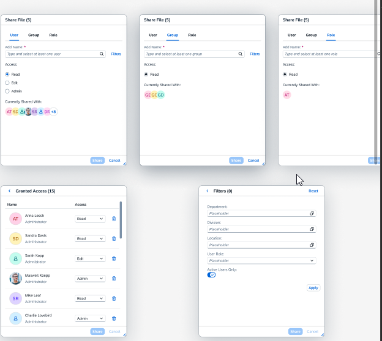

Reviewed UI text and flagged accessibility issues in a redesigned sharing experience — findings led the design team to create a new header pattern and helped document the process in a pattern library.

A sharing experience in SAP SuccessFactors was undergoing a redesign — new layout, new controls, new navigation patterns. UI text review was part of the process, but the review surfaced issues that went beyond copy: the redesign had introduced accessibility problems that needed design-level fixes, not just wording changes.
Two issues stood out. First, the keyboard focus order skipped the new header element — meaning users who navigate without a mouse would miss a key interactive control entirely, a direct WCAG failure. Second, the back navigation label was ambiguous: in the redesigned flow, the back button no longer returned to the expected previous screen, but the label gave no indication of where it would actually go.
Both issues were invisible during design — they only became visible when you read the interface the way a screen reader or keyboard user would, which is exactly what a UI text review is for.